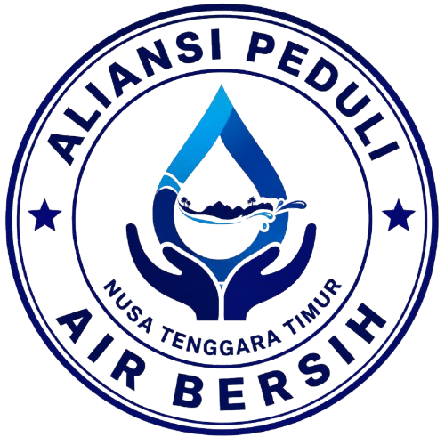

Aliansi Peduli Air Bersih Nusa Tenggara Timur (APAB NTT) merupakan organisasi yang bergerak dalam bidang sosial, kemanusiaan, dan lingkungan hidup dengan fokus pada perjuangan penyediaan akses air bersih bagi masyarakat di wilayah Nusa Tenggara Timur.
Mewujudkan masyarakat yang memperoleh akses air bersih secara adil, layak, dan berkelanjutan.